In Part 26 of this series, we looked at how we can use IDA Pro and Hex Fiend to patch an IOS application and modify its implementation. Patching an application has the specific advantage that once a change has been made, it is permanent. However, if you look back at the article on IDA Pro, you will realize that the process of patching the application was a bit tedious, mainly because we didn’t have a licensed version of IDA Pro which costs a lot. In this article, we will look at a utility named Hopper which we can use as an alternative to IDA Pro. It is less costly than IDA Pro and also provides a sleek interface to work with.
According to Hopperapp.com ..
Hopper is a reverse engineering tool for OS X, Linux and Windows, that lets you disassemble, decompile and debug (OS X only) your 32/64bits Intel Mac, Windows and iOS (ARM) executables! Take a look at the feature list below!
And…
Even if Hopper can disassemble any kind of Intel executable, it does not forget its main platform. Hopper is specialized in retrieving Objective-C information in the files you analyze, like selectors, strings and messages sent.
In this article, i am using a paid version of Hopper which cost about $60. I think it is an incredible price given the things we can do with this application. I would recommend you check out the demo version which lets you perform some tasks to get a feel of Hopper. Anyways, once you download the Hopper app, this is the interface we are looking at.
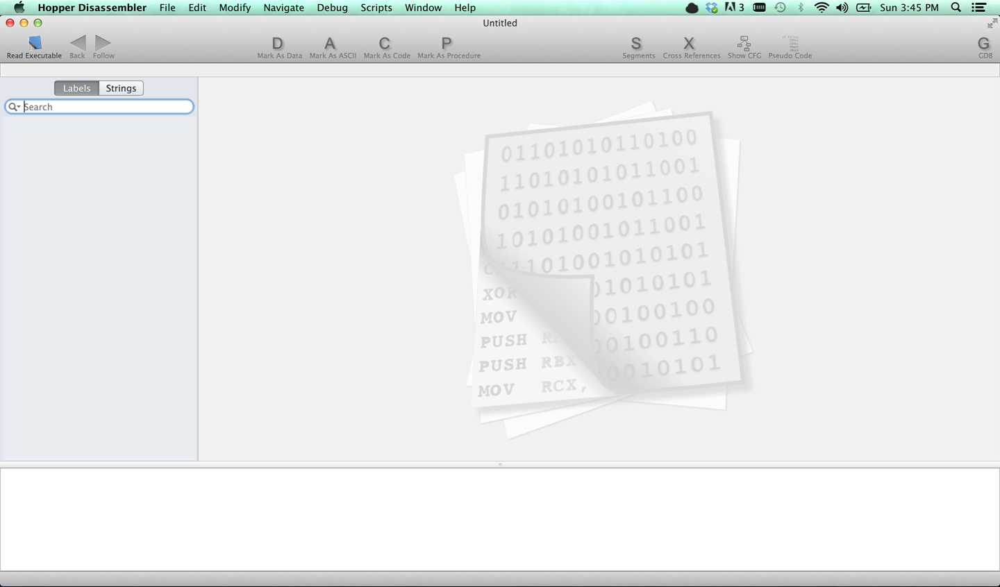
In this article also, we will use the same demo application that we used in Part 26, the GDB-Demo application that you can download from my github profile. I highly recommend that you read Part 26 before you proceeed with this article. Just to quickly recap, the GDB-Demo had a login form like this.
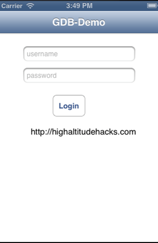
It accepts a certain username/password combination in order to allow us to login. Our task is to patch this application in such a way that the application allows us to login even if the username/password combination is not correct. Please note that in this article, we will be debugging and patching the application which is x86 architecture on a laptop , however you can do the same patching with ARM executable as well by copying the binary from the device.
Once you have downloaded the GDB-Demo application, run it using Xcode. This will install the application in the IOS simulator. Now our task is to find the location of the application binary on our system. If you run an application in Xcode, it will generate an application directory inside the folder /Users/$username/Library/Application Support/iPhone Simulator/$ios version of simulator/Applications/. In my case, the location is /Users/Prateek/Library/Application Support/iPhone Simulator 6.1/Applications/. Once you are in this directory, you have to find your application folder. Using the command ls -al will give you the created date of these folders. The latest one would be our application.
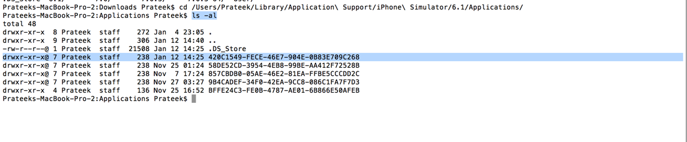
Use the command open DirectoryName and this will open the directory in Finder.
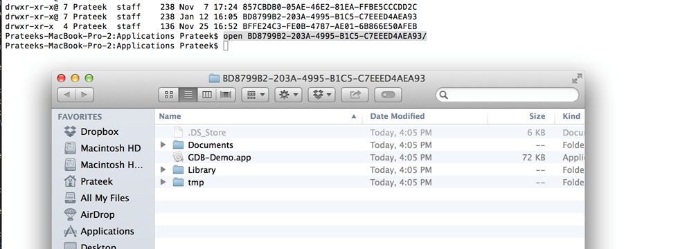
Go inside the folder GDB-Demo.app (this is the application bundle) by right clicking on it and choosing the option Show Package contents. Inside this folder, you will find the application binary with the name GDB-Demo. This is the binary that we will provide to Hopper.
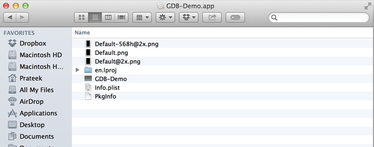
Now open Hopper app and go to File->Read Executable To Disassemble. Give the location of the GDB-Demo binary. Also make sure to quit Xcode but keep the simulator open.
Hopper will now start dissasembling the application.

On the left hand side, if you select the Strings section, you will see all the constant strings that Hopper was able to dump from the binary. If you have read part 26 on this series, you will note that the password is also present in this list ;-).
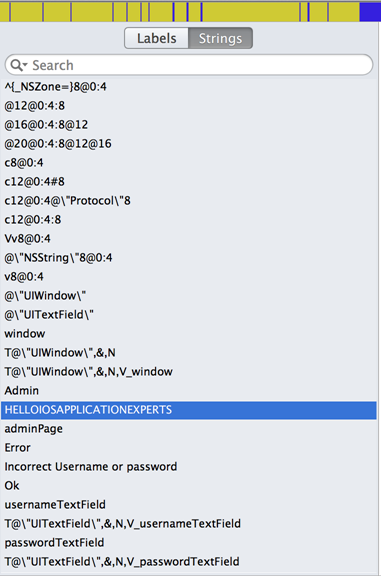
If you select the labels section on the left, it will give you all the labels it was able to dump from the application. This includes labels to method implementations, constant strings, classes etc..
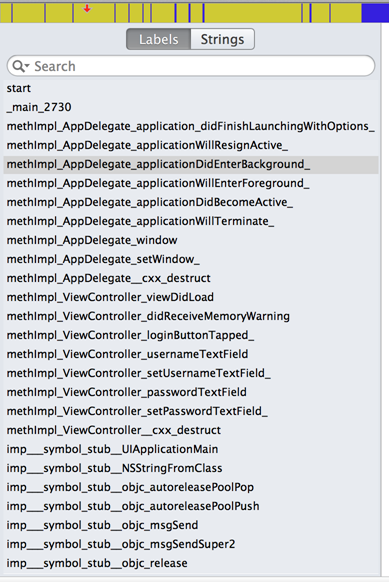
We know that the method that is important is loginButtonTapped. So lets search for it in the labels section. Once we find the method, tap on it and it will take you to its disassembly.

One kickass feature of Hopper is that it can provide Pseudo code for a function. To check out the Pseudo code for this function, click on Pseudo Code on the top right.
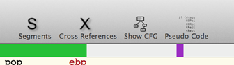
As you can see, Hopper provides you with a Pseudo code for this function.
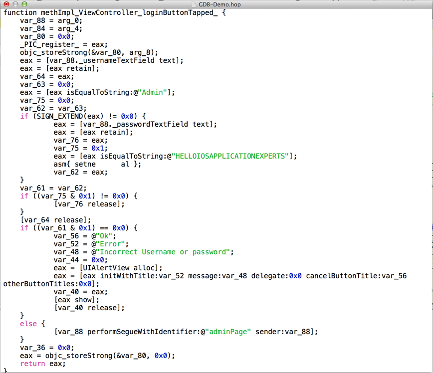
This is such an amazing feature. It helps us so much in figuring out what this method is supposed to do. In this case, it just gives away the password. Another awesome feature of this application is Show CFG which helps you find the flow of the application. Just click on Show CFG next to the Pseudo code button.
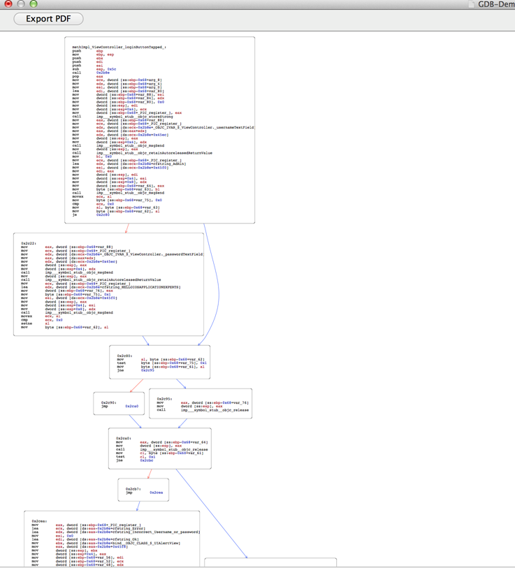
If we scroll down a bit in this function, we get to the point shown in the image below. We can see that the left flow takes us to a point where we see the text Incorrect Username or Password, whereas the right flow has some text admin page. Obviously, i would like the flow to go to the right side.

Now lets check the condition that decides which way the flow goes. As we can see from the image below, the assembly instruction is jne 0xcbc
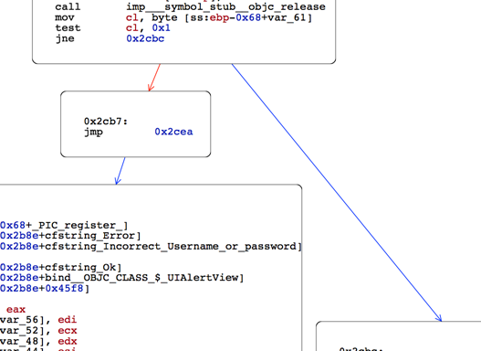
0x2cbc is a label that corresponds to the right hand side. So if we can modify the instruction in such a way that the flow is always taken towards the right hand side, then our task will be accomplished.
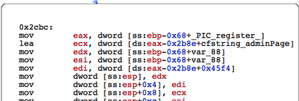
Well, its pretty simple to do this. Just replace jne 0xcbc by jmp 0xcbc. To do this, click on this specific instruction in the dissassembly and click on Modify->Assemble instruction
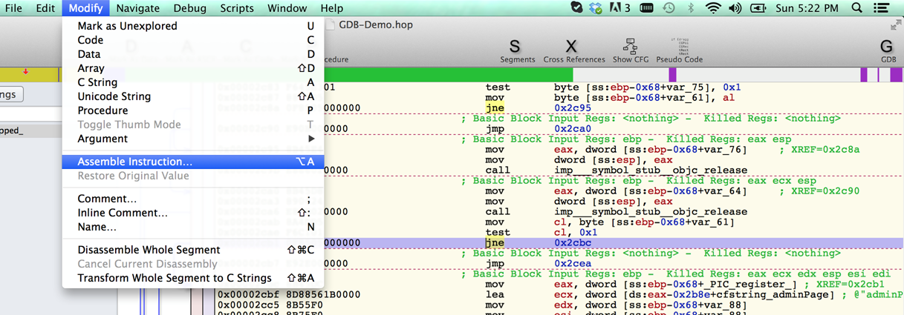
Then we write down the instruction that we want and click on Assemble and Go Next. That’s it, this is the only change we want to do.

Now lets save this executable and overwrite the previous one. Go to File -> Produce New Executable and overwrite the original executable.
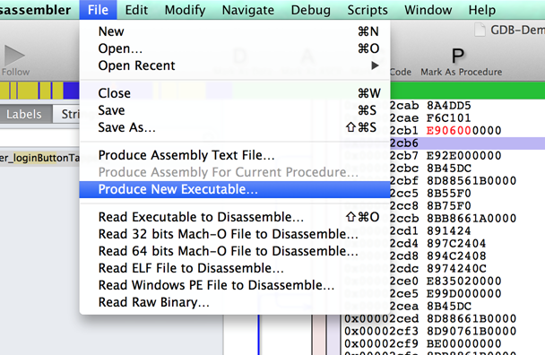
Now go the simulator application, quit any running instance of GDB-Demo application and restart the application. Tap on Login and you will see that the login has been bypassed.
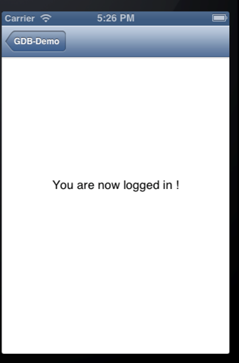
Congratulations, we just patched an application using Hopper. This was just a small feature of Hopper. Hopper lets us do many more things. I would recommend you check them out and no, i am not associated with Hopper nor do i know the author personally. I just think its a cool app and for $60, its an extremely good deal !
In the next article, we will learn about Insecure or Broken Cryptography.